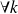
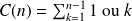
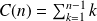
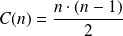
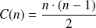
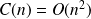
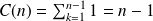
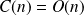
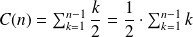

Tri par insertion
Le tri par insertion est un algorithme naïf qui consiste à insérer successivement chaque élément dans l'ensemble des éléments déjà triés. C'est souvent ce que l'on fait quand on trie un jeu de cartes par exemple.
Le tri par insertion d'un tableau t s'effectue en place, c'est-à-dire qu'il ne demande pas d'autre tableau que celui que l'on trie. Son coût en mémoire est donc constant si on ne compte pas la place occupée par les données. Il consiste à insérer successivement chaque élément t[i] dans la portion du tableau t[0:i] déjà triée.
Voici une écriture de cet algorithme en Python.
def tri_ins(t) :
'''trie la liste t par la methode d'insertion'''tt = t[:]
for k in range(1, len(tt)) :
temp = tt[k]
j = k
while j > 0 and temp < tt[j - 1] :
tt[j] = tt[j - 1]
j -= 1
tt[j] = temp
return (tt)
Question
Trier le tableau suivant en détaillant chaque ligne, résultat de cet algorithme.
[0, 7, 5, 2, 4, 9, 8, 3, 6, 1]
[0, 1, 2, 3, 4, 5, 6, 7, 8, 9]
Question
Montrer que la boucle while se termine.
j est un variant de boucle.
Question
Déterminer un invariant de boucle pour l'algorithme.
"tt[: k] est trié

".
Question
Déterminer la complexité au pire, au mieux puis moyenne, préciser leurs noms courants.
Extrait de la synthèse sur les calculs de complexité du Cours 3 : Complexité.
Dans la boucle for, il y a 2 affectations puis une boucle while, puis une dernière affectation.
Le test de comparaison de la boucle while et les deux affectations qui s'y trouvent, sont réalisées selon les cas. Dans le meilleur des cas, la comparaison n'a lieu qu'une fois, et dans le pire des cas,
 fois. On exprime la complexité en nombre de comparaisons (donc on néglige le coût des affectations).
fois. On exprime la complexité en nombre de comparaisons (donc on néglige le coût des affectations).

Au pire des cas

, c'est la somme des
 premiers termes d'une suite arithmétique de raison 1. Donc

.
premiers termes d'une suite arithmétique de raison 1. Donc

.
C'est une complexité quadratique :  .
Au meilleur des cas
 .
C'est une complexité linéaire :  .
En moyenne
L'espérance de la bonne position d'un élément dans la liste triée de longueur
est, pour une répartition équiprobable, de
.

C'est donc également une complexité quadratique : .
Question
Proposer un exemple de tableau sur lequel le tri par insertion a un coût linéaire (meilleur cas). Proposer également un exemple de tableau sur lequel il a un coût quadratique (pire cas).
Coût linéaire (meilleur cas)
[0, 1, 2, 3, 4, 5, 6, 7, 8, 9]
Coût quadratique (pire cas)
[9, 8, 7, 6, 5, 4, 3, 2, 1, 0]
Question
Proposer une version récursive de cet algorithme.
def tri_ins_rec(t, tab = []) :
'''trie la liste t par la methode d'insertion par un algorithme recursif. tab memorise la liste triee au fur et a mesure.'''if len(t) == 0 :
# cas de basereturn ( tab )
else :for k in range(len(tab)) :
# la liste deja triee est parcourueif t[0] < tab[k] :
# le prochain element de t est insere a sa place dans tabreturn ( tri_ins_rec( t[1:], tab[: k] + [t[0]] + tab[k :]) )
# le prochain element s'insere a la fin de tabreturn ( tri_ins_rec( t[1:], tab + [t[0]]) )